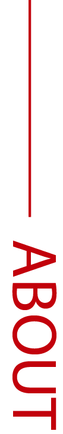

Giống như hầu hết các công ty đấu giá, eBay không trực tiếp bán hàng của chính mình mà chỉ giúp cho các thành viên liệt kê và trưng bày sản phẩm của họ, đấu giá các sản phẩm và thanh toán chúng. Nó hoạt động giống như là một nơi họp chợ cho các thành viên hoặc các doanh nghiệp sử dụng để đấu giá các sản phẩm và dịch vụ.
Hiểu thêm về chúng tôi
Đấu giá trực tuyến là cách cho phép người tham gia đấu giá các sản phẩm hoặc các dịch vụ thông qua Internet. Khi nói đến đấu giá trực tuyến là chúng ta nghĩ ngay đến eBay, website đấu giá trực tuyến lớn nhất trên thế giới hiện nay.